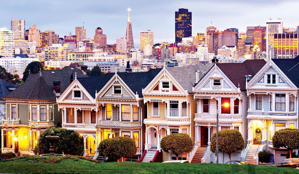
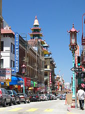
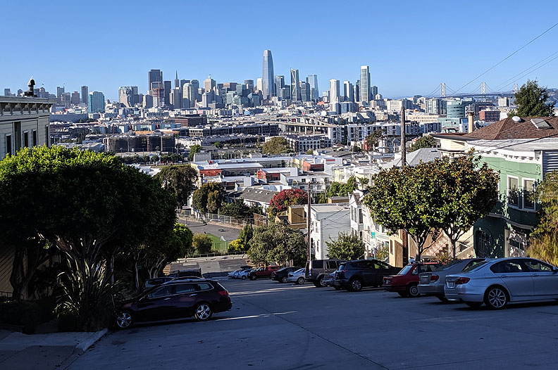

The historic center of San Francisco is the northeast quadrant of the city anchored by Market Street and the waterfront. It is here that the Financial District is centered, with Union Square, the principal shopping and hotel district, and the Tenderloin nearby. Cable cars carry riders up steep inclines to the summit of Nob Hill, once the home of the city's business tycoons, and down to the waterfront tourist attractions of Fisherman's Wharf, and Pier 39, where many restaurants feature Dungeness crab from a still-active fishing industry. Also in this quadrant are Russian Hill, a residential neighborhood with the famously crooked Lombard Street; North Beach, the city's Little Italy and the former center of the Beat Generation; and Telegraph Hill, which features Coit Tower. Abutting Russian Hill and North Beach is San Francisco's Chinatown, the oldest Chinatown in North America. The South of Market, which was once San Francisco's industrial core, has seen significant redevelopment following the construction of Oracle Park and an infusion of startup companies. New skyscrapers, live-work lofts, and condominiums dot the area. Further development is taking place just to the south in Mission Bay area, a former railroad yard, which now has a second campus of the University of California, San Francisco and Chase Center, which opened in 2019 as the new home of the Golden State Warriors.

Painted Ladies
West of downtown, across Van Ness Avenue, lies the large Western Addition neighborhood, which became established with a large African American population after World War II. The Western Addition is usually divided into smaller neighborhoods including Hayes Valley, the Fillmore, and Japantown, which was once the largest Japantown in North America but suffered when its Japanese American residents were forcibly removed and interned during World War II. The Western Addition survived the 1906 earthquake with its Victorians largely intact, including the famous "Painted Ladies", standing alongside Alamo Square. To the south, near the geographic center of the city is Haight-Ashbury, famously associated with 1960s hippie culture.[citation needed] The Haight is now home to some expensive boutiques[96] and a few controversial chain stores, although it still retains some bohemian character.

Chinatown in San Francisco
North of the Western Addition is Pacific Heights, an affluent neighborhood that features the homes built by wealthy San Franciscans in the wake of the 1906 earthquake. Directly north of Pacific Heights facing the waterfront is the Marina, a neighborhood popular with young professionals that was largely built on reclaimed land from the Bay.

View of Downtown San Francisco from Potrero Hill
In the south-east quadrant of the city is the Mission District—populated in the 19th century by Californios and working-class immigrants from Germany, Ireland, Italy, and Scandinavia. In the 1910s, a wave of Central American immigrants settled in the Mission and, in the 1950s, immigrants from Mexico began to predominate. In recent years, gentrification has changed the demographics of parts of the Mission from Latino, to twenty-something professionals. Noe Valley to the southwest and Bernal Heights to the south are both increasingly popular among young families with children. East of the Mission is the Potrero Hill neighborhood, a mostly residential neighborhood that features sweeping views of downtown San Francisco. West of the Mission, the area historically known as Eureka Valley, now popularly called the Castro, was once a working-class Scandinavian and Irish area. It has become North America's first gay village, and is now the center of gay life in the city. Located near the city's southern border, the Excelsior District is one of the most ethnically diverse neighborhoods in San Francisco. The predominantly African American Bayview-Hunters Point in the far southeast corner of the city is one of the poorest neighborhoods and suffers from a high rate of crime, though the area has been the focus of several revitalizing and controversial urban renewal projects.
Page Owner: Vikram Gupta. Information taken from Wikipedia. Original Page Created by Jeffron Addy